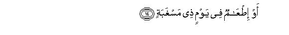
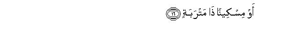
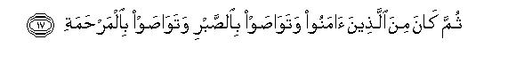
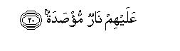

بسم الله الرحمن الرحيم
Sayyid Abul Ala Maududi - Tafhim al-Qur'an - The Meaning of the Qur'an
 90.
Surah Al Balad (The City)
90.
Surah Al Balad (The City)
The Surah has been so named after the word al balad in the first verse.
Its subject matter and style resemble those of the earliest Surahs revealed at Makkah, but it contains a pointer which indicates that it was sent down in the period when the disbelievers of Makkah had resolved to oppose the Holy Prophet (upon whom be Allah's peace), and made it lawful for themselves to commit tyranny and excess against him.
In this Surah a vast subject has been compressed into a few brief sentences, and it is a miracle of the Quran that a complete ideology of life which could hardly be explained in a thick volume has been abridged most effectively in brief sentences of this short Surah. Its theme is to explain the true position of man in the world and of the world in relation to man and to tell that God has shown to man both the highways of good and evil, has also provided for him the means to judge and see and follow them, and now it rests upon mans own effort and judgment whether he chooses the path of virtue and reaches felicity or adopts the path of vice and meets with doom.
First, the city of Makkah and the hardships being faced therein by the Holy Prophet (upon whom be peace) and the state of the children of Adam have been cited as a witness to the truth that this world is not a place of rest and ease for man, where he might have been born to enjoy life, but here he has been created into toil and struggle. If this theme is read with verse 39 of Surah An-Najm (Laisa lil insani illa ma saa: there is nothing for man but what he has striven for), it becomes plain that in this world the future of man depends on his toil and struggle, effort and striving.
After this, man's misunderstanding that he is all in all in this world and that there is no superior power to watch what he does and to call him to account, has been refuted.
Then, taking one of the many moral concepts of ignorance held by man, as an example, it has been pointed out what wrong criteria of merit and greatness he has proposed for himself in the world. The person who for ostentation and display squanders heaps of wealth, not only himself prides upon his extravagances but the people also admire him for it enthusiastically, whereas the Being Who is watching over his deeds, sees by what methods he obtained the wealth and in what ways and with what motives and intention he spent it.
Then Allah says: We have given man the means of knowledge and the faculties of thinking and understanding and opened up before him both the highways of virtue and vice: one way leads down to moral depravity, and it is an easy way pleasing for the self; the other way leads up to moral heights, which is steep like an uphill road, for scaling which man has to exercise self- restraint. It is man's weakness that he prefers slipping down into the abyss to scaling the cliff.
Then, Allah has explained what the steep road is by following which man can ascend to the heights. It is that he should give up spending for ostentation, display and pride and should spend his wealth to help the orphans and the needy, should believe in Allah and His Religion and joining the company of believers should participate in the construction of a society which should fulfill the demands of virtue and righteousness patiently and should be compassionate to the people. The end of those who follow this way is that they would become worthy of Allah's mercies. On the contrary, the end of those who follow the wrong way, is the fire of Hell from which there is no escape.

In the name of Allah, the Compassionate, the Merciful.

[1-2] Nay!1 I swear by this City,2 while you (O Prophet), have been made lawful in this City.3
[2-10] And I swear by father and the children he begot4 that We have indeed created man in toil.5 Does he think that no one will have power over him?6 He says, "I have squandered heaps of wealth."7 Does he think that no one has seen him?8 Have We not given him two eyes, and a tongue and two lips,9 and shown him both the highways (of good and evil)?10


[11-16] Yet he has not attempted the steep pass.11 And what do you know what the steep pass is? It is the freeing of a neck from bondage, or the feeding in a day of hunger of a nearly related orphan, or a poor man lying in the dust12


[17-20] Then (besides) one should be of those who have believed13 and exhorted one another to patience and exhorted one another to mercy (for God's creatures).14 These are the people of the right hand. As for those who refuse to believe in Our Revelations, they are the people of the left hand.15 They shall have a Fire enveloping them.16
1As we have explained in E.N.1 of Surah AI-Qiyamah above, to begin a discourse with a "Nay" and resume it with an oath means that the people were asserting a wrong thing to refute which it was said: "Nay, the truth is not that which you seem to assert, but I swear by such and such a thing that the truth is this and this" As for the question what it was to refute which this discourse was sent down, it is indicated by the theme that follows. The disbelievers of Makkah said that there was nothing wrong with the way of life that they were following, as if to say: "Eat, drink and be merry for tomorrow we die in the natural process of time. Muhammad (upon whom be Allah's peace), without any reason, is finding fault with this way of life and warning us that we would at some time in the future be called to account for it and rewarded and punished accordingly."
2"This City": the city of Makkah. There was no need here to explain why an oath was being sworn by this City. The people of Makkah were well aware of the background and importance of their city and knew how in the midst of desolate mountains, in an un-cultivated, barren valley, the Prophet Abraham had brought his wife and suckling child and left them there without any support; how he had built a House there and proclaimed to the people to visit it as pilgrims when there was no soul for miles around to hear the proclamation, and then how this city had eventually become the commercial and religious center of Arabia and was blessed with such sacredness that there was no other place of security beside it in that lawless land for centuries.
3Three meanings of the words in the Text have been given by the commentators:
(1) "That you are a resident of this city and your residence here has further enhanced the glory of this city";
(2) "that although this city is a sanctuary; a time will come when for some time it will become lawful for you to fight and kill the enemies of the true Faith here; and,
(3) "that in this city where even killing of animals and cutting of trees is forbidden for the people of Arabia, and where everyone is living in perfect peace, you, O Prophet, have no peace, and persecuting you and devising plans to kill you has been made lawful."
Although the words are comprehensive enough to cover all the three meanings, yet when the theme that follows is considered, one feels that the first two meanings bear no relevance to it, and only the third meaning seems to be correct.
4As the words "father and children he begot" have been used indefinitely, and this is followed by the mention of man, father could only imply Adam (peace be on him) and children the human beings who existed in the world, exist today and will exist in the future.
5This is that for which the oaths as mentioned above have been sworn. Man's being created in toil means that man in this world has not been created to enjoy himself and live a life of ease and comfort, but the world for him is a place of enduring and undergoing toil, labor and hardship, and no man can be immune from this. The city of Makkah is a witness that a servant of Allah toiled and struggled hard, then only did it become a city and the center of Arabia. In this city of Makkah the condition of Muhammad (upon whom be Allah's peace) is a witness that he is enduring every kind of hardship for the sake of a mission; so much so that there is full peace here for the wild animals but no peace for him. Then, every man's survival, from the tithe he is conceived in the mother's womb till the last breath of life, is a witness that he has to pass through trouble, toil, labor, dangers and hardships at every step. The most fortunate of us is also exposed to grave dangers of death before birth or of elimination by abortion while in the mother's womb. At birth he is only a hair-breadth away from death. After birth he is so helpless that had there not been somebody to look after him, he would perish uncared for and un-noticed. When he became able to walk he stumbled at every step. Froth childhood to youth and old age he had to pass through such physical changes that if any change had taken a wrong turn, his very life would have been at stake. Even if he is a king or a dictator, he at no time enjoys internal peace from the tear that a rebellion might arise against him somewhere. Even if he is a conqueror he is never at peace from the danger that one of his generals might rise in revolt against him Even if he is a Korah of his time, he is ever anxious to increase his wealth and to safeguard it. Thus, there is no one who may he enjoying perfect peace freely and without hesitation, for man indeed has been created into a life of toil and trouble.
6That is: Is man, who is ever exposed to such hazards, involved in the delusion that he can do what he likes, and there is no superior power to seize and suppress him? The fact, however, is that even before the occurrence of the Hereafter in this world itself, he sees that his destiny every moment is being ruled by some other Being against Whose decrees all his plans and designs prove ineffective. A single jolt of the earthquake, a blast of wind, a flood in the river and a sea-storm are enough to show how weak and feeble man is against the Divine forces. A sudden accident can reduce a strong and robust person to a cripple; one turn of the fortune deposes a mighty sovereign froth the position of authority. When the fortunes of the nations, which have climbed to the very apex of glory and prosperity, change, they are humiliated and disgraced even in the world where do one could dare look them in the face. How has then this man been deluded into thinking that no one else can have power over him ?
7Literally: "I have destroyed heaps of wealth", i.e. squandered and wasted it. These words show how proud the speaker was of his wealth. The heaps of wealth that he spent was so insignificant as against his total wealth that he did not mind squandering it carelessly. And to what purpose did he squander it'? Not for a genuine, good cause as becomes evident from the following verses, but for display of his wealth and expression of his pride and glory. Bestowing rich awards on , poetic admirers, inviting and feeding hundreds of thousands of people on marriage and death ceremonies, gambling away heaps of wealth, attending festivals with large entourages, trying to excel others in display of glory and grandeur, having heaps of food cooked on ceremonial occasions and throwing invitations to all and sundry to come and eat, or arranging and supplying running meals at the residence so as to impress the people around with one's generosity and largeheartedness; such were the expenditures of ostentation, which in the days of ignorance were regarded as a symbol of man's munificence and magnanmity, and a sign of his greatness. For these they were praised and admired; on these their Praises were sung; and on account of these they prided themselves against the less fortunate.
8That is, "Doesn't this boaster understand that there is also a God above him, Who sees by what means he obtained this wealth, in what ways he spent it, and with what intention, motive, and purpose he did all this ? Does he think that God will put any value on his extravagance, his fame-mongering and his boasting Does he think that like the world, God too will be deluded by it?"
9That is, "Have We not given him the means of obtaining knowledge and wisdom '?" "Two eyes" does not imply the eyes of the cow and buffalo, but human eyes, which if used intelligently can help man see all around himself those signs which lead to the reality and distinguish the right from the wrongs. "The tongue and lips" do not merely imply the instruments of speech but the rational wind behind these instruments which performs the functions of thinking and understanding and then uses them for expressing its ideas, motives and designs.
10That is, "We have not left him alone after granting him the faculties of thinking and reasoning so that he may have to search out his own way, but We have also guided him and opened up before him both the highways of good and evil, virtue and vice, so that he may consider them seriously and choose and adopt one or the other way on his own responsibility. This same subject has been expressed in Surah Ad-Dahr: 2-3, thus: "Indeed We created man from a mixed sperm-drop, to try him, and so We made him capable of hearing and seeing. We showed him the way, whether to be grateful or disbelieving. " For explanation, see E.N.'s 3 to S of Ad-Dahr.
11The words in the original are: fa-lagtaham-al- aqabah. Iqtiham means to apply oneself to a hard and toilsome task, and 'aqabah is the steep path that passes through mountains for ascending heights. Thus, the verse means: "One of the two paths that We have shown him, leads to heights but is toilsome and steep; man has to tread it against the desires of his self and the temptations of Satan. The other path is easy which descends into chasms, but does not require any toil from man; one only needs to give free reins to oneself, then one automatically goes on rolling down the abyss. Now, the man to whom We had shown both the paths, adopted the easy down-hill path and abandoned the toilsome path, which leads to the heights."
12Since in the foregoing verses the extravagances of man which he indulges in for ostentation and expression of superiority to others, have been mentioned, now here it is being stated as to what expenditure of wealth it is which leads man up to moral heights instead of causing him to sink into moral depravity and perversion. But in this there is no enjoyment for the self; on the contrary, man has to exercise self-restraints and make sacrifices. The expenditure is that one should set a slave free, or should render a slave monetary help so as to enable him to win his freedom by paying the ransom, or free a debtor from his debt, or secure release of a helpless person without means from penalties. Likewise, the expenditure is that one should feed a nearly related orphan (i.e. an orphan who is either a relative or a neighbor) who is hungry, and a needy, helpless person who might have been reduced to extreme poverty and might have none to support and help him. Helping such people does not win a person fame and reputation, nor feeding them brings him the admiration for being wealthy and generous which one usually wins by holding banquets to thousands of well-to-do people. But the path to moral and spiritual heights passes on steep uphill roads only.
Great merits of the acts of virtue mentioned in these verses have been described by the Holy Prophet (upon whom be Allah's peace). For instance, about fakku raqabah (fleeing a neck from bondage) many ahadith have been related in the traditions, one of which is a tradition from Hadrat Abu Hurairah, to the effect; "The Holy Prophet said: The person who set a believing slave free, Allah will save from fire of Hell every limb of his body in lieu of every limb of the slave's body, the hand in lieu of the hand, the foot in lies of the foot, the private parts in lieu of the private parts " (Musnad, Ahmad, Bukhari. Muslim, Tirmidhi, Nasa'i). Hadrat 'Ali bin Husain (lmam Zain al-`Abedin) asked Sa`d bin Marjanah, the reporter of this Hadith: "Did you hear it yourself from Abu Hurairah?" When 6e replied in the affirmative, Imam Zain al-`Abedin called out his most valuable slave and set him free there and then. According to Muslim, he had an offer often thousand dirhams for the slave. On the basis of this verse, Imam Abu Hanifah and Imam Sha`bi have ruled: "Setting a slave free is superior to giving away charity, for Allah has mentioned it before the mention of charity.
The Holy Prophet has mentioned the merits of rendering help to the needy in many ahadith, one of which is this Hadith from Hadrat Abu Hurairah: "The Holy Prophet said: The one who strives in the cause of rendering help to the widow and the needy is like the one who endeavors and strives in the cause of jihad for the sake of Allah. (And Hadrat Abu Hurairah says :) I think that the Holy Prophet also said: He is even like him who keeps standing up in the Prayer constantly, without ever taking rest, and like him who observes the fast continuously without ever breaking it:" (Bukhari, Muslim).
As for the orphans, there are numerous sayings reported from the Holy Prophet. Hadrat Sahl bin Sa`d has reported: "The Holy Prophet (upon whom be peace) said: I and the one who supports a nearly related of un-related orphan, shall stand in Paradise like this-saying this he raised his index finger and the middle finger, keeping them a little apart." (Bukhari). Hadrat Abu HIurairah has reported this saying of the Holy Prophet: "The best among the Muslim homes is the home wherein an orphan is treated well and the worst the one wherein an orphan is mistreated." (Ibn Majah, Bukhari in Al-Adab al- Mufrad). Hadrat Abu Umamah says that the Holy Prophet said: "The one who passed his hand on the head of an orphan, only for the sake of Allah, will have as many acts of virtue recorded in his favour as the number of the hair on which his hand passed, and the one who treated an orphan boy or girl well. will stand in Paradise with me like this...saying this the Holy Prophet joined his two fingers together." (Musnad Ahmad, Tirmidhi). Ibn 'Abbas says: The Holy Prophet said: "The one who made an orphan join him in eating and drinking, Allah will make Paradise obligatory for him unless he commits a sin which cannot be forgiven." (Sharh as-Sunnah).Hadrat Abu Hurairah says: A man complained before the Holy Prophet (upon whom be peace), saying: "I am hard-hearted." The Holy Prophet said to him: "Treat the orphan with kindness and love and feed the needy one." (Musnad Ahmad).
13That is, "In addition to these qualities it is essential that one should be a believer, for without faith no act is an act of virtue, nor acceptable in the sight of Allah. At numerous places in the Qur'an it has been stated that only such an act of virtue is appreciable and becomes a means of salvation as is accompanied by faith. In .Surah An-Nisa', for example, it has been said: "The one who does good deeds, whether man or woman, provided that the one is a believer, will enter Paradise (v. 1245.)" In Surah An-Nahl: "Whosoever does righteous deeds, whether male or female, provided that he is a believer, We shall surely grant him to live a pure life in this world, and We will reward such people (in the Hereafter) according to their best deeds" (v. 97). In Surah Al-Mu'min: "Whoever does good, whether man or woman, provided that he is a believer, all such people shall enter Paradise wherein they shall be provided without measure." (v : 4U). Whoever studies the Qur'an, will see that in this Book wherever the good reward of a righteous act has been mentioned, it has always been made conditional upon the faith, a good act without faith; has nowhere been regarded as acceptable to God, nor has any hope been given for a reward for it.
Here, the following important point also should not remain hidden from view: In this verse it has not been said: "Then he believed", but: "Then he joined those who believed.' This means that mere believing as an individual and remaining content with it is not what is desired; what is desired is that every new believer should join those who have already believed so as to form a party of the believers, to bring about a believing society, which should work for establishing the virtues and wiping out the vices as demanded by the faith.
14These are two of the important characteristics of the believing society, which have been expressed in two brief sentences. The first characteristic is that its members should exhort one another to patience, and the second that they should exhort one another to compassion and mercy.
As for patience, we have explained at many places that in view of the extensive meaning in which the Qur'an has used this word, the entire life of a believer is a life of patience. As soon as a man stops on to the path of the faith, test of his patience starts. Patience is required to be exercised in performing the acts of worship enjoined by Allah patience is needed in carrying out the commands of Allah; abstention from the things forbidden by Allah is not possible without patience; patience is needed in abandoning the moral evils and in adopting the pure morals; temptations to sin faced at every step can be resisted only by recourse to patience. On countless occasions in life obedience to God's law entails losses, troubles, hardships and deprivations, and disobedience to the law seems to bring benefits and pleasures. Without patience no believer can fare well on such occasions. Then, as soon as a believer has adopted the way of the faith, he has to meet with resistance not only from his own self and personal desires but also from his children, family, society, country and nation and from the base-hearted among men and jinn of the entire world; so much so that he is even required to abandon his country and undertake Jihad in the cause of God. Under all these conditions only the quality of patience can cause a man to remain steadfast to principles. Now, obviously, if every believer individually was put to such a hard test, he would be faced with the danger of defeat at every step and world hardly be able to pass through the test successfully. On the contrary, if there existed a believing society every member of which was not only himself possessed of patience but all its members also were .supporting one another mutually in the test of patience, successes would fall to its lot, a tremendous power would be generated to face the evil, a mighty force of good individuals would be ready to help bring the entire society on to the path of virtue and righteousness.
As for mercy and compassion, it is the distinctive feature of the society of believers that they are not a hard-hearted, merciless and unjust people but a society whose members are merciful and compassionate. to humanity at large and sympathetic and friendly among themselves. A believer as an individual is an embodiment of Allah's quality of mercy and the group of the believers as a party also is a representative of Allah's Messenger, who has been described thus: "O Muhammad, We have sent you to be a real blessing for the people of the world." (AI-Anbiya': 107). The highest moral quality which the Holy Messenger (upon whom be Allah's peace) tried his utmost to inculcate among his followers was this very quality of mercy. Consider - the following of his sayings, which show what importance he attached to it. Hadrat Jarir bin `Abdullah says that the Holy Messenger (upon whom be peace) said: "Allah does not show mercy to him who does not show mercy to others." (Bukhari, Muslim).
Hadrat `Abdullah bin `Amr bin al-`As says that the holy Prophet said: "The Rahman (Merciful) shows mercy to those who show mercy (to others). Show mercy to those who live in the earth, the One who is in heaven will show mercy to you." (Abu Da'ud, Tirmidhi).
Hadrat Abu Sa`id Khudri has reported that the Holy Prophet said: "The one who does not show mercy, is not shown mercy. " (Bukhari in Al-Adab al-Mufrad). Ibn `Abbas says that the Holy Prophet said: "The one who does not treat our young ones mercifully and does not treat our elderly ones respectfully, dces not belong to us. " (TirmidhI).
Abu Da'ud has related this same saying of the Holy Prophet on the authority of Hadrat `Abdullah bin `Amr, thus: "The one who did not feel pity on our young and did not respect our elderly does not belong to us."
Hadrat Abu Hurairah says: "I have heard Abul-Qasim, the Truthful (upon whom be peace), say: "The heart of the wretched one is deprived of the quality of mercy altogether' . " (Musnad Ahmad, Tirmidhi).
Hadrat `Iyad bin Humad relates that the Holy Prophet said: "Three kinds of men belong to Paradise, one of whom is the person who is kindly and compassionate to every relative and every Muslim." (Muslim).
Hadrat Nu`man bin Bashir has reported that the Holy Prophet said: "You will find the believers like a body in the matter of mutual kindness, love and sympathy, so that if one part of the body suffers the whole body suffers and becomes restless because of it." (Bukhari, Muslim).
Hadrat Abu Musa Al-ash`ari says that the Holy Prophet said: "The believer is for the other believer like a wall each part of which supports and strengthens the other part." (Bukhari, Muslim).
Hadrat `Abdullah bin 'Umar has reported that the Holy Prophet said: "A Muslim is a brother of the other Muslim: neither treats him unjustly, nor withholds his help from him. The person who works to fulfill a need of his brother, Allah will seek to fulfill his need; and the one who rescues a Muslim from an affliction, Allah will rescue him from an affliction of the afflictions of the Resurrection Day; and the one who conceals the fault of a Muslim, Allah will conceal his fault on the Resurrection Day. " (Bukhari, Muslim).
These traditions indicate what kind of a society is envisaged by the Qur'anic instruction given in this verse, which exhorts the righteous people to join the group of the believers after they have affirmed the faith.
15For an explanation of "the people of the right hand and of the left hand", see E.N.'s 5, 6 of Surah Al-Waqi'ah.
16That is, fire will be so covering them from every side that they will find no way of escape from it.